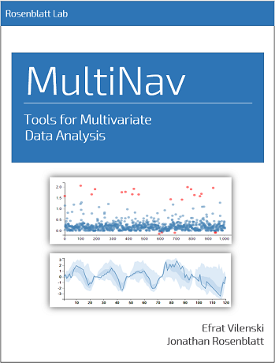

MultiNav - Multivariate Explanatory Data Analysis
Efrat Vilenski Supervised by Jonathan Rosenblatt
2017-06-29
1 Preface

This is the documentation for MultiNav R Packadge! Visit the github repository for this project.

This work is licensed under a Creative Commons Attribution-NonCommercial-ShareAlike 3.0 United States License.